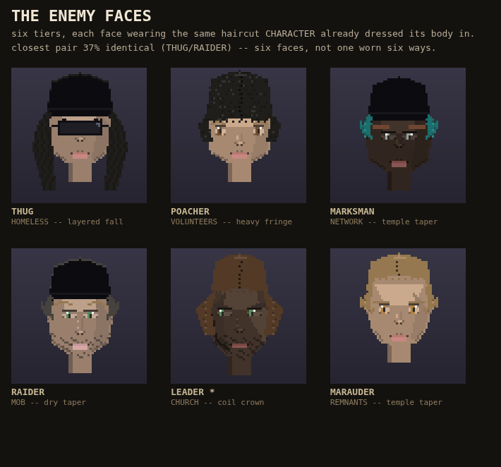

Each of the six enemy ranks now has a face. The hair on the face is the real hair CHARACTER already put on that rank's body, read from the same faction table, not a random roll.
Checked on real pixels: before this, 0 of 6 faces wore the cut their own body wears; after, 6 of 6. The leader's face carries a second light so he reads as the one you remember.

Not in this: the undead ("chipped bodies") have no face by their own lore, and the kill recap screen that would show these faces does not exist yet -- both are a different lane's row, not guessed at here.